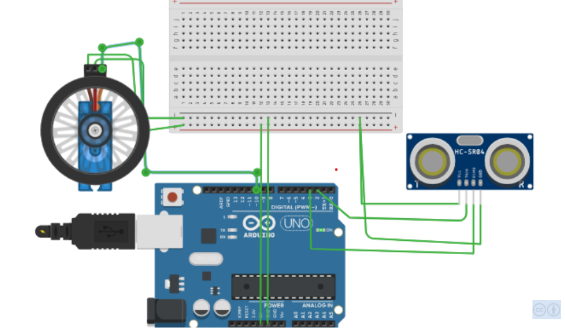
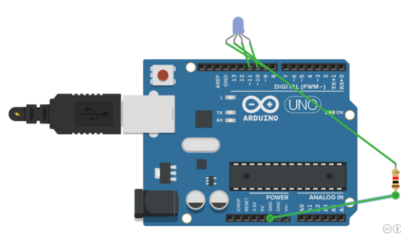

This is the cad model of the human following robot which can
detect any human or a object when it comes before it and can stop when a obstacle comes in its way.
Human following is a technique used by robot and autonomous vehicles to follow a human within a specific range. In this case, communication between the human and the robot is the most significant factor where sensor is needed to ensure its successfulness.
Rockets
Saturn V
It is a replica of saturn v Rockects which is a non rewnewable
rockets that helped in asstronuts to land on moon
The Saturn V rocket was 111 meters (363 feet) tall, about the height of a
36-story-tall building, and 18 meters (60 feet) taller than the Statue of Liberty. Fully fueled for liftoff, the Saturn V weighed 2.8 million kilograms (6.2 million pounds), the weight of about 400 elephants. The rocket generated 34.5 million newtons (7.6 million pounds) of thrust at launch,
creating more power than 85 Hoover Dams.
GSLV MK-III
GSLV MkIII, chosen to launch Chandrayaan-2 spacecraft, is a three-stage heavy lift launch vehicle developed by ISRO. The vehicle has two solid strap-ons, a core liquid booster and a cryogenic upper stage.
GSLV Mk III is designed to carry 4 ton class of satellites into Geosynchronous Transfer Orbit (GTO) or about 10 tons to Low Earth Orbit (LEO), which is about twice the capability of the GSLV Mk II.
The two strap-on motors of GSLV Mk III are located on either side of its core liquid booster. Designated as ‘S200’, each carries 205 tons of composite solid propellant and their ignition results in vehicle lift-off.
Falcon heavy
Falcon Heavy is the most powerful operational rocket in the world by a factor of two. With the ability to lift into orbit nearly 64 metric tons (141,000 lb) Falcon Heavy can lift more than twice the payload of the next closest operational vehicle, the Delta IV Heavy.
Satellites
Juno spacecraft
Juno is a NASA space probe orbiting the planet Jupiter. It was built by Lockheed Martin and is operated by NASA's Jet Propulsion Laboratory.
Juno's mission is to measure Jupiter's composition, gravitational field, magnetic field, and polar magnetosphere. It will also search for clues about how the planet formed, including whether it has a rocky core, the amount of water present within the deep atmosphere, mass distribution, and its deep winds, which can reach speeds up to 620 km/h (390 mph).
Pragyan
Pragyan means (in Sanskrit) wisdom was the rover of Chandrayaan-2, a lunar mission developed by the Indian Space Research Organisation , that lanched in July 2019 . Pragyan was destroyed along with its lander, Vikram, when it crash-landed on the Moon in September 2019 and never got the chance to deploy.
The rover's mass was about 27 kg (60 lb) and was designed to operate on solar power. The rover was to move on 6 wheels traversing 500 meters on the lunar surface at the rate of 1 cm per second, performing on-site analysis and sending the data to the Vikram lander, which would have relayed it to the Earth station
Ardiuno Circuts

Automatic distbin
Automatic distbin
It is a automatic distbin , if we take our hand before the dustbin the servo activates and the dustbin opens and we can throw the trash in the dustbinand if we move away from the dustbin the dustbin closes.
It is because the ardiuno senses your hand with the help of the ultrasonic sensor it activates the servo which connects to the opening of the dustbin To Know More

Colourful lights
Colourful lights
Colourful lights is a light produced by rgb led which can produce all type of lights and can produces different types of light when different voltage is given to it.
It works when the rgb led is connected to the ardiuno with the pwm pins(Pulse With Modulation) in the ardiuno.When the code is given to it it produce colourful lights To Know More